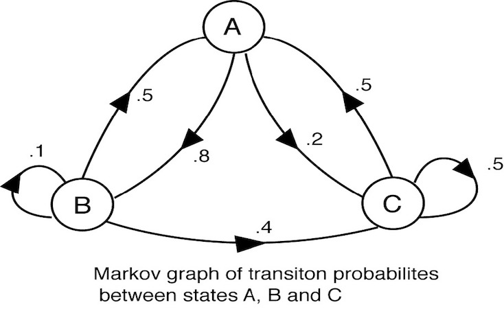
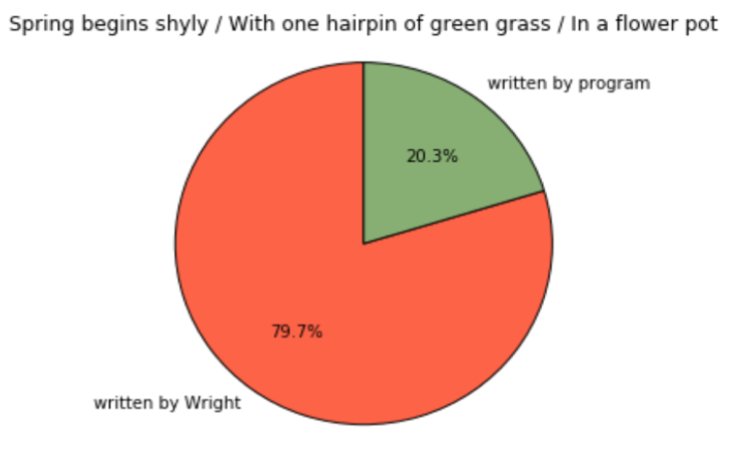

This is honestly one of the most exciting projects I've ever had the chance to work on!
During my undergraduate career at Boston University, I never thought I would have the chance to combine my computational skills with my literary skills; but lo and behold, I discovered that Tufts University was offering a class in Natural Language Processing. I asked my advisor at school if I could take this class for credit during the spring semester of my senior year and he said yes! As a result, I was exposed to machine learning, n-grams, the Viterbi algorithm, the Brown corpus, maximum entropy models, and so many more amazing tools I could use to further analyze words (some not even in English!).
For my final project, I decided to combine my love of poetry with Markov models in regards to text generation.

I chose to zoom in on the works of Richard Wright, an African-American poet of the mid-20th century. I aggregated 130 of his haikus in a text file to serve as the foundational text for my algorithms.
In class, we had been working with the Penn Treebank so I wanted my project, in addition to randomization, to have some sort of focus on POS tagging. The end result involved the creation of a baseline algorithm to generate text randomly and a more so restricted algorithm to generate text according to word-tags.
The baseline algorithm made heavy use of dictionaries. While scanning Wright's poetry, the dictionary will be populated with key-value pairs in which each key is a word encountered in the text file and each value associated with the key is a list of words that follow that key word within the text file. If a particular word is followed by another word multiple times, it will also be included in that list as many times as it appears to follow the word. The random library in Python was used to generate haikus according to the probability that one word is followed by another depending on the key word and selecting from the list of words associated with it.
Here is an example of a haiku generated by the baseline algorithm:
In this autumn morning
Leaving the dew-wet grass
A pretty princess
The restricted algorithm also utilized the random library; however, it served to restrict randomness by generating text based on tag patterns rather than word patterns. Using the universal tagger, ten total tags were used to label each word. In order to generate a more grammatical flow to the haiku, words were generated on the basis of tags (i.e. since it was more common that a determiner appeared in front of a noun, words would be generated using that basis along with other probabilities calculated in regards to tags).
Here is an example of a haiku generated by the restricted algorithm:
Each burning sill window
To pauses fails beneath night
The horn town stumbles
To test whether or not my generated haikus accurately mimicked that of Wright's haikus, I conducted a survey asking people whether or not an indicated haiku was written by Wright or written by a program. Roughly 70.2% of people were correctly able to determine whether or not the haiku was written by a program or computer. This goes to show that ultimately the human mind is always the best text generator; however, machine learning and applications of NLP are making it possible so that computers can reach that same level as well.
People were most correctly able to identify this haiku as being written by Wright:

People were least correctly able to identify this haiku as being written by the program: